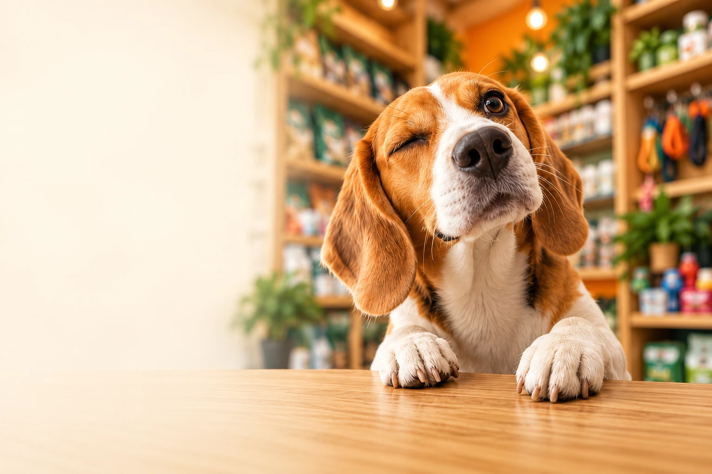
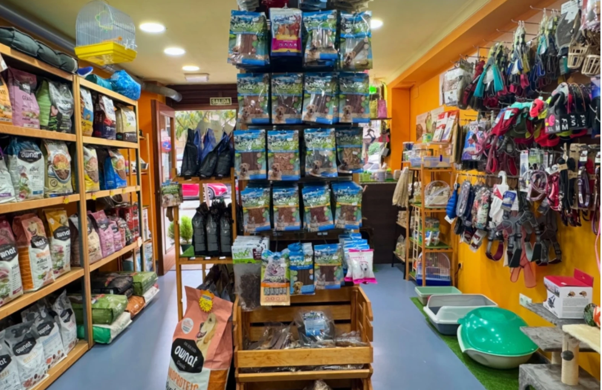
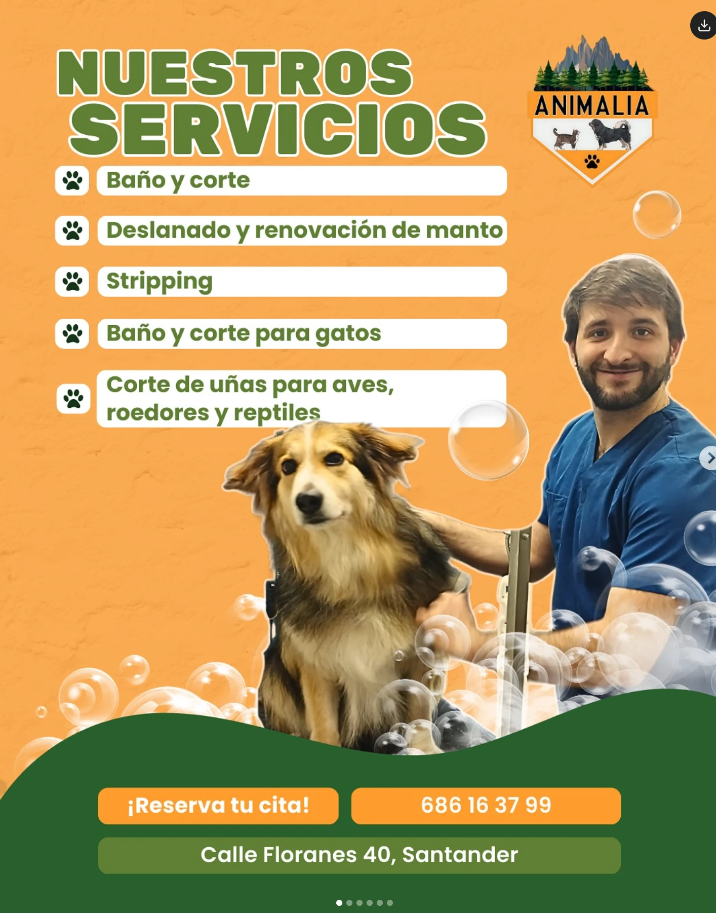
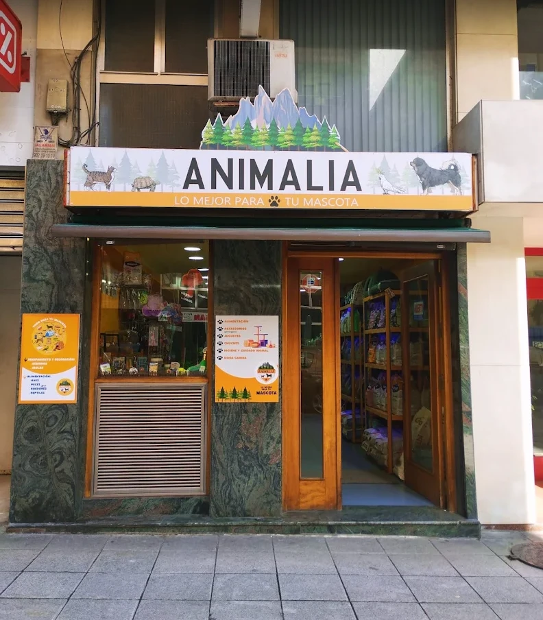

Alimentación
y accesorios
Alimentos, chuches, juguetes y accesorios para acompañar su día a día. Descúbrelos en nuestra tienda de Santander.
Descubrir en tienda →AlimentaciónJuguetesHigieneAccesorios

Todo para su bienestar
en un mismo lugar.

Alimentos, chuches, juguetes y accesorios para acompañar su día a día. Descúbrelos en nuestra tienda de Santander.
Descubrir en tienda →
Baño y corte, deslanado y renovación de manto, stripping y cuidado del pelaje. Cuéntanos qué necesita tu compañero y pide tu cita.
Te esperamos en nuestra tienda de Santander, con alimentación, accesorios y un trato cercano para ti y tu mascota.
